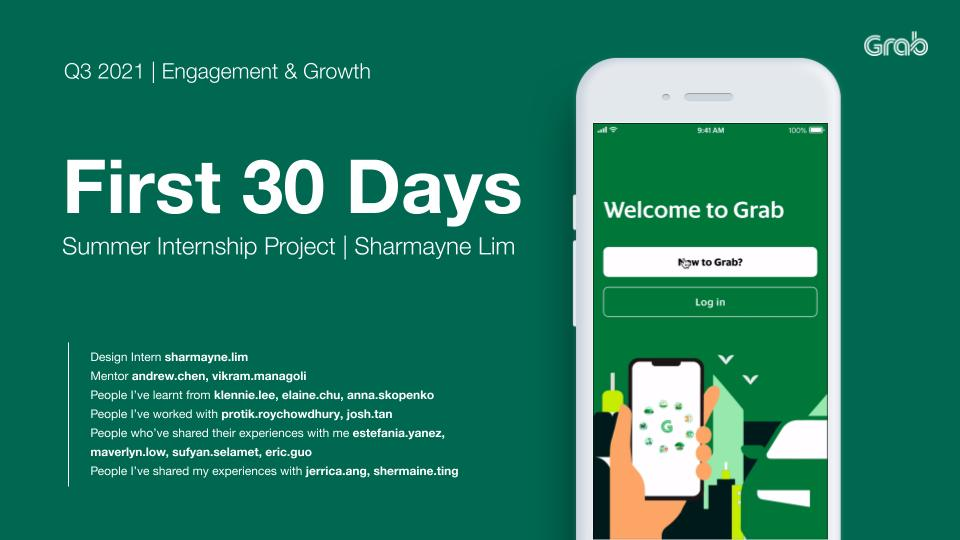
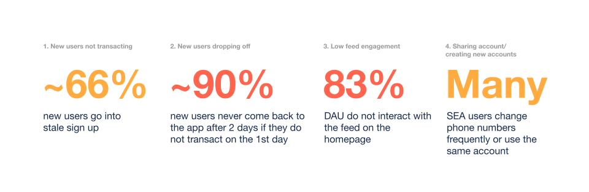

Project
Product Design@Grab
Part of the CX team at Southeast Asia's leading superapp 🚀
Categories
Product Design

Organisation
Role
Product Design Intern at the Consumer Experience team
Duration
Jun - Oct 2021
Description
Grab is a Nasdaq-listed Southeast Asian company that provides services ranging from transportation, deliveries, payments to insurance, all within its “super app”. It currently serves more than 187 million users in over 330 cities across eight Southeast Asian countries. I was given the opportunity to helm my own project to improve new users' first 30 days experience. In my 5 months, I worked in a cross-functional team with product managers, product analysts and engineers, and kickstarted a series of onboarding experiments that has an estimated impact of additional 70k users/month in total. I even had the rare opportunity to participate in Grab's internal hackathon (Grabathon 9.0) and won 3rd place, but I'll cover that here instead.
Overview
Throughout my 5 month internship at Grab, I was given the opportunity to work on a slew of different projects, from
First 30 Days Project
Introduction
The project started with the question - how can we drive energy-conscious behavioral changes for people who care but are not sure what to do? We focused on grocery shopping and eating, hoping to bring awareness to people to adopt a plant-rich diet.
Product Brief

The project started with the question - how can we drive energy-conscious behavioral changes for people who care but are not sure what to do? We focused on grocery shopping and eating, hoping to bring awareness to people to adopt a plant-rich diet.
Timeline

The project started with the question - how can we drive energy-conscious behavioral changes for people who care but are not sure what to do? We focused on grocery shopping and eating, hoping to bring awareness to people to adopt a plant-rich diet.
1. Empathize

After perusing the decks of information and research on users, I identified a few key observations:
1. New users are not transacting: ~66% of new users go into stale sign up.
2. New users are dropping off: ~90% of new users never come back to the app after two days if they don't transact on the first day.
3. Low feed engagement: ~83% DAU do not interact with the feed on the homepage.
4. Sharing accounts/creation of new accounts: Many users in the Southeast Asian region frequently changed their numbers or share accounts with their family or friends.
We had a few hypotheses from these observations:
1. Expensive service: A lot of new users drop off because they deem Grab to be more expensive that other platforms/service providers.
2. Difficult to understand app: We don’t have a coherent progressive hand holding for new users to introduce them to the services that Grab provides, and the benefits of transacting with Grab.
3. Family/different account: A large aspect of SEA users is around them changing phone numbers frequently, or even using the same account across multiple users. This potentially inflates the number of “new” users that we consider as drop offs.
Here are some key statistics as well with details on our user funnel.
2. Ideate
With these key observations in mind,
3. Prototype
The project started with the question - how can we drive energy-conscious behavioral changes for people who care but are not sure what to do? We focused on grocery shopping and eating, hoping to bring awareness to people to adopt a plant-rich diet.
Empathize
The project started with the question - how can we drive energy-conscious behavioral changes for people who care but are not sure what to do? We focused on grocery shopping and eating, hoping to bring awareness to people to adopt a plant-rich diet.
Brainstorming & analysing ideas
The project started with the question - how can we drive energy-conscious behavioral changes for people who care but are not sure what to do? We focused on grocery shopping and eating, hoping to bring awareness to people to adopt a plant-rich diet.
Developing solutions
The project started with the question - how can we drive energy-conscious behavioral changes for people who care but are not sure what to do? We focused on grocery shopping and eating, hoping to bring awareness to people to adopt a plant-rich diet.
Presenting ideas for feedback
The project started with the question - how can we drive energy-conscious behavioral changes for people who care but are not sure what to do? We focused on grocery shopping and eating, hoping to bring awareness to people to adopt a plant-rich diet.
Iterating on design
The project started with the question - how can we drive energy-conscious behavioral changes for people who care but are not sure what to do? We focused on grocery shopping and eating, hoping to bring awareness to people to adopt a plant-rich diet.